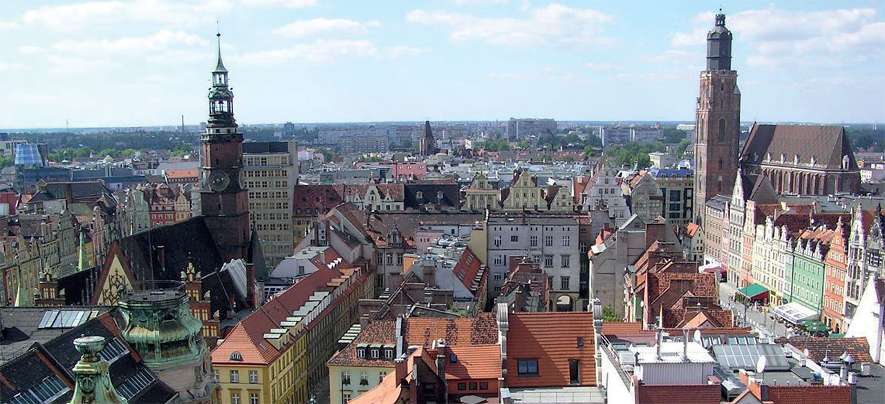
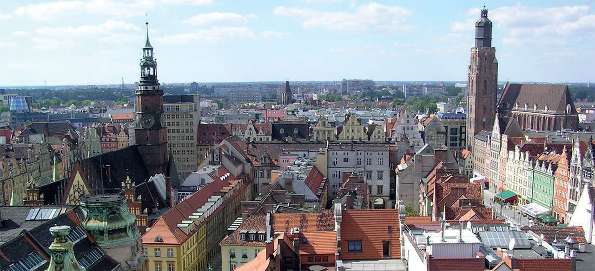

Univers PME
Vie de l'entreprise
 

Entreprendre en Pologne6e puissance économique de l'Union européenne et premier marché en Europe centrale, la Pologne figure également parmi les pays les plus attractifs en termes d'investissements directs étrangers (IDE). Caractérisé par une économie en forte diversification avec de nombreux secteurs en expansion, le pays a mieux résisté à la crise mondiale que nombre de ses voisins européens. Une économie stablete (...) › Lire la suite
Conjoncture

Entreprendre en Pologne6e puissance économique de l'Union européenne et premier marché en Europe centrale, la Pologne figure également parmi les pays les plus attractifs en termes d'investissements directs étrangers (IDE). Caractérisé par une économie en forte diversification avec de nombreux secteurs en expansion, le pays a mieux résisté à la crise mondiale que nombre de ses voisins européens. Une économie stablete (...) › Lire la suite
Innovation

Entreprendre en Pologne6e puissance économique de l'Union européenne et premier marché en Europe centrale, la Pologne figure également parmi les pays les plus attractifs en termes d'investissements directs étrangers (IDE). Caractérisé par une économie en forte diversification avec de nombreux secteurs en expansion, le pays a mieux résisté à la crise mondiale que nombre de ses voisins européens. Une économie stablete (...) › Lire la suite
International

Entreprendre en Pologne6e puissance économique de l'Union européenne et premier marché en Europe centrale, la Pologne figure également parmi les pays les plus attractifs en termes d'investissements directs étrangers (IDE). Caractérisé par une économie en forte diversification avec de nombreux secteurs en expansion, le pays a mieux résisté à la crise mondiale que nombre de ses voisins européens. Une économie stablete (...) › Lire la suite
Financement

Entreprendre en Pologne6e puissance économique de l'Union européenne et premier marché en Europe centrale, la Pologne figure également parmi les pays les plus attractifs en termes d'investissements directs étrangers (IDE). Caractérisé par une économie en forte diversification avec de nombreux secteurs en expansion, le pays a mieux résisté à la crise mondiale que nombre de ses voisins européens. Une économie stablete (...) › Lire la suite
Marketing

Entreprendre en Pologne6e puissance économique de l'Union européenne et premier marché en Europe centrale, la Pologne figure également parmi les pays les plus attractifs en termes d'investissements directs étrangers (IDE). Caractérisé par une économie en forte diversification avec de nombreux secteurs en expansion, le pays a mieux résisté à la crise mondiale que nombre de ses voisins européens. Une économie stablete (...) › Lire la suite
Assurances

Entreprendre en Pologne6e puissance économique de l'Union européenne et premier marché en Europe centrale, la Pologne figure également parmi les pays les plus attractifs en termes d'investissements directs étrangers (IDE). Caractérisé par une économie en forte diversification avec de nombreux secteurs en expansion, le pays a mieux résisté à la crise mondiale que nombre de ses voisins européens. Une économie stablete (...) › Lire la suite
Moyens de paiement

Entreprendre en Pologne6e puissance économique de l'Union européenne et premier marché en Europe centrale, la Pologne figure également parmi les pays les plus attractifs en termes d'investissements directs étrangers (IDE). Caractérisé par une économie en forte diversification avec de nombreux secteurs en expansion, le pays a mieux résisté à la crise mondiale que nombre de ses voisins européens. Une économie stablete (...) › Lire la suite
Trésorerie

Entreprendre en Pologne6e puissance économique de l'Union européenne et premier marché en Europe centrale, la Pologne figure également parmi les pays les plus attractifs en termes d'investissements directs étrangers (IDE). Caractérisé par une économie en forte diversification avec de nombreux secteurs en expansion, le pays a mieux résisté à la crise mondiale que nombre de ses voisins européens. Une économie stablete (...) › Lire la suite
Fiscalité

Entreprendre en Pologne6e puissance économique de l'Union européenne et premier marché en Europe centrale, la Pologne figure également parmi les pays les plus attractifs en termes d'investissements directs étrangers (IDE). Caractérisé par une économie en forte diversification avec de nombreux secteurs en expansion, le pays a mieux résisté à la crise mondiale que nombre de ses voisins européens. Une économie stablete (...) › Lire la suite
Immobilier

Entreprendre en Pologne6e puissance économique de l'Union européenne et premier marché en Europe centrale, la Pologne figure également parmi les pays les plus attractifs en termes d'investissements directs étrangers (IDE). Caractérisé par une économie en forte diversification avec de nombreux secteurs en expansion, le pays a mieux résisté à la crise mondiale que nombre de ses voisins européens. Une économie stablete (...) › Lire la suite
Entreprise responsable

Entreprendre en Pologne6e puissance économique de l'Union européenne et premier marché en Europe centrale, la Pologne figure également parmi les pays les plus attractifs en termes d'investissements directs étrangers (IDE). Caractérisé par une économie en forte diversification avec de nombreux secteurs en expansion, le pays a mieux résisté à la crise mondiale que nombre de ses voisins européens. Une économie stablete (...) › Lire la suite
Management

Entreprendre en Pologne6e puissance économique de l'Union européenne et premier marché en Europe centrale, la Pologne figure également parmi les pays les plus attractifs en termes d'investissements directs étrangers (IDE). Caractérisé par une économie en forte diversification avec de nombreux secteurs en expansion, le pays a mieux résisté à la crise mondiale que nombre de ses voisins européens. Une économie stablete (...) › Lire la suite
Succès

Entreprendre en Pologne6e puissance économique de l'Union européenne et premier marché en Europe centrale, la Pologne figure également parmi les pays les plus attractifs en termes d'investissements directs étrangers (IDE). Caractérisé par une économie en forte diversification avec de nombreux secteurs en expansion, le pays a mieux résisté à la crise mondiale que nombre de ses voisins européens. Une économie stablete (...) › Lire la suite
Législation

Entreprendre en Pologne6e puissance économique de l'Union européenne et premier marché en Europe centrale, la Pologne figure également parmi les pays les plus attractifs en termes d'investissements directs étrangers (IDE). Caractérisé par une économie en forte diversification avec de nombreux secteurs en expansion, le pays a mieux résisté à la crise mondiale que nombre de ses voisins européens. Une économie stablete (...) › Lire la suite
Création d'entreprise

Entreprendre en Pologne6e puissance économique de l'Union européenne et premier marché en Europe centrale, la Pologne figure également parmi les pays les plus attractifs en termes d'investissements directs étrangers (IDE). Caractérisé par une économie en forte diversification avec de nombreux secteurs en expansion, le pays a mieux résisté à la crise mondiale que nombre de ses voisins européens. Une économie stablete (...) › Lire la suite
|

{kind=link}